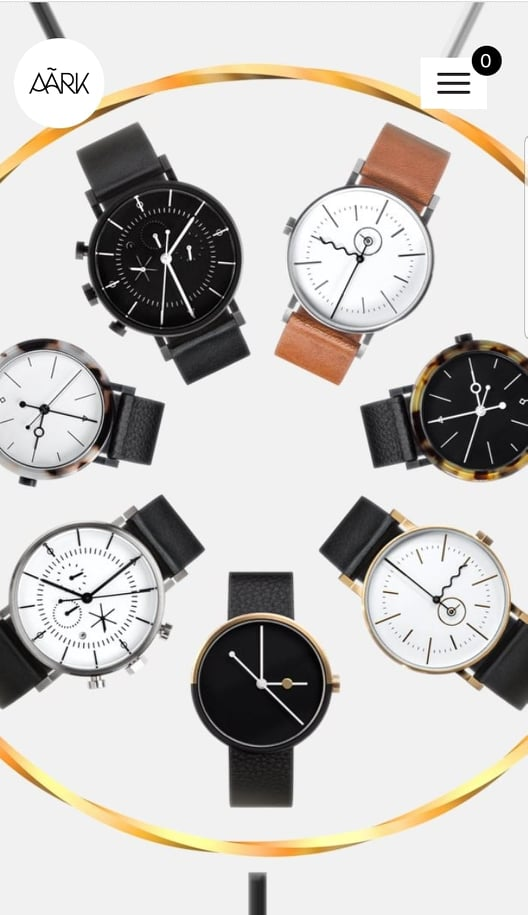
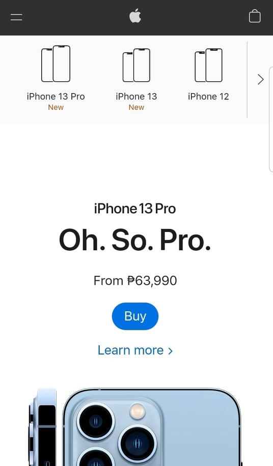

Fitt's Law Design
Beyond The Fence
adventuredogphotographyFitt’s law stipulates that the time recommended to move to a target area. It's now easy to use the "Start Exploring" button to explore the site. Makes it simpler to attract clients and persuade them to visit the website to make an appointment, place a purchase, or get a service. They also placed the play button in an easy-to-tap spot on the mobile phone app. Similarly, the space between a user's task/attention area and the task-related button should be maintained to a minimum.
Repetition Design
AARK collectives
AARK-watch The Designers frequently employed rhythm as a kind of repetition, with patterns serving as the actual mechanism of repeating. They employed patterns that are widely seen in real-world design, such as interior design, fashion, and trends. Rhythm is defined as the intervals between segments that are repeated. Designers utilize meticulous spacing between components to give visitors a sense of movement, inventiveness, and enthusiasm.
White Space & Clean Design
Apple company
iPhone It's not simply "empty" space; it's a crucial part of web design. It allows items to live within it. The utilization of hierarchy for information, typography, color, or pictures is what white space is all about. iPhone truly understands how to employ these kind of designs to entice mobile device consumers. They believe that through this design they can attract buyers. That's why iPhones has a bigger sales for a couple decades and one of the best mobile phones company in the world.